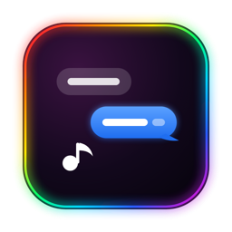

Lyrics, word by word
Synced to the exact second of the song. Pick chat bubbles with photo cards from real cities, an Apple Music-style scroll, big karaoke lines or a single minimal line.

LyricWallLyricWall turns whatever you're playing on Spotify into synced, animated lyrics with RGB light around the edges of your screen. Leave it running on your second monitor while you work.
Free. Needs Spotify Premium. Setup takes about two minutes.
Synced to the exact second of the song. Pick chat bubbles with photo cards from real cities, an Apple Music-style scroll, big karaoke lines or a single minimal line.
Five effects: flow, chase, spectrum, breathe and static. Match the album art, your background or your own colors, and set the speed, glow and thickness.
LyricWall listens to your computer's sound and pulses the lights and artwork on every bass hit. Nothing is recorded.
Big album art or a spinning record over a background made from the cover's colors. Play, pause and skip right from the screen.
Use album colors, the blurred cover, one of your photos or a slideshow from a folder.
Runs in a window or fullscreen on any monitor. Keep it on top of other windows if you want it always in view.
Pick your computer below. The first time you open it, your computer will warn you that the app is from an unknown developer. The setup guide shows how to get past that in two clicks.
Spotify only lets apps like this connect through a free developer app that you create yourself on Spotify's site. It takes two minutes, and the app walks you through it on first launch.
Paste your Client ID into LyricWall, log in to Spotify once, then play any song. Press F for fullscreen and S for settings.
Since February 2026, Spotify requires Premium for any personal developer app, which is how LyricWall connects. It's Spotify's rule, not ours. LyricWall itself is free.
Spotify limits each developer app to five users. If everyone shared one, it would stop working after five people. Making your own takes two minutes and means it's yours alone.
That's because LyricWall isn't signed with a paid Apple developer certificate. Open System Settings, go to Privacy & Security, scroll down and click Open Anyway. You only do this once. Step-by-step help.
Click More info, then Run anyway. This shows up for apps from new developers. Step-by-step help.
Lyrics come from LRCLIB, a free community database. Most popular songs have synced lyrics. If a song only has plain lyrics, LyricWall spreads them across the song. If it has none, you'll see the album art and typing dots instead.
No. Audio is only analysed live to find the beat, and your Spotify login stays on your computer. There are no accounts, ads or tracking.
Press the [ and ] keys to nudge them by a quarter second, or use the timing slider in Settings.